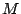

An Asf+Sdf specification consists of a sequence of module declarations. Each module may define syntax rules as well as semantic rules and the notation used in the semantic rules depends on the definition of syntax rules. The entities declared in a module may be visible or invisible to other modules. A module can use another module from the specification by importing it. As a result, all visible names of the imported module become available in the importing module.
The overall structure of a module is:
module <ModuleName> <ImportSection>* <ExportOrHiddenSection>* equations <ConditionalEquation>*
A module consists of a module header, followed by a list of zero or more import sections, followed by zero or more hidden or export sections and an optional equations section that defines conditional equations. Later[In Section ]ParametersRenamings we will see that modules can alse be parameterized and that they can be renamed on import.
Conceptually, a module is a single unit but for technical reasons the syntax sections and the equations section are stored in physically separate files. For each module  in a specification two files exist: `.sdf' contains the syntax sections of and `.asf' contains the equations section of .
A <ModuleName> is either a simple <ModuleId> or a <ModuleId> followed by zero or more parameter symbols, e.g., <Module>[<Symbol>*], the symbols will be explained in Symbols[Section ]Symbols. The <ModuleId> may be compount module name, the ModuleId reflects the directory structure. For example basic/Booleans means that the module Booleans is found in the subdirectory basic.
An <ExportOrHiddenSection> is either an export section or a hidden section. The former starts with the keyword exports and makes all entities in the section visible to other modules. The latter starts with the keyword hiddens and makes all entities in the section local to the module.
An <ExportOrHiddenSection> has thus one of the two forms:
exports <Grammar>+or
hiddens <Grammar>+
A <Grammar> can be a definition of one of the following:
Note that it is possible to have hidden imports as well, this means that the contents of a hidden imported module in some module is visible in but is not exported to modules which import .
There are a number of related properties which have an effect across the various grammar items, these items are intermixed with the discussion of the grammars:
Each of these entities and properties will now be described and illustrated by examples.